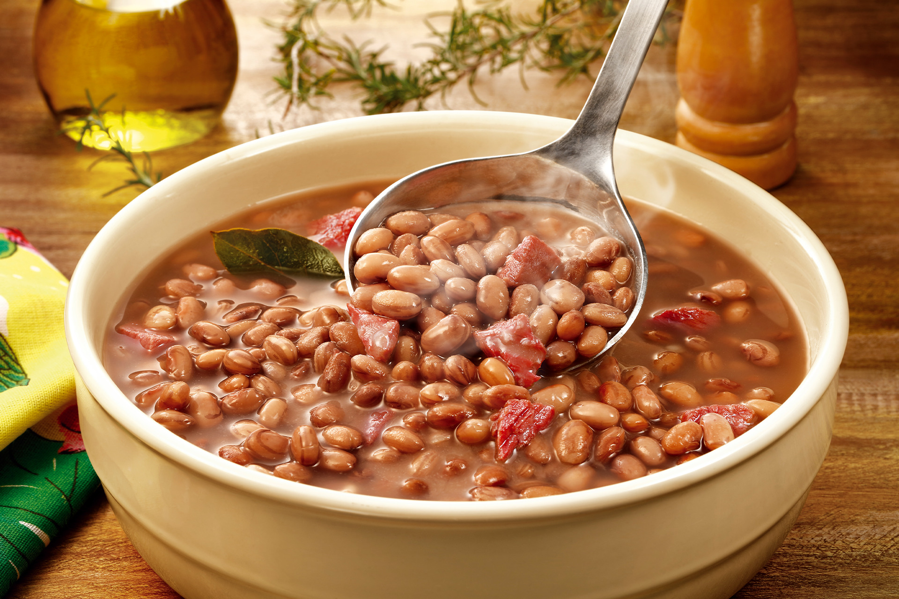

Feijão
Cozinhar feijão parece complicado? Com o chef.io, fica simples! Aprenda a deixar ele macio, saboroso e pronto para brilhar no seu prato do dia a dia. Quando o assunto é feijão, muita gente acha que é coisa de mestre-cuca experiente... mas a verdade é que todo mundo pode aprender, mesmo começando do zero!
Se você já queimou, esqueceu de deixar de molho ou não sabe nem por onde começar, calma: isso é mais comum do que parece. E é por isso que estamos aqui.
Nesta missão, você vai descobrir o passo a passo para preparar um feijão básico (e delicioso!), entender os truques para deixar os grãos no ponto certo e aprender como temperar sem mistério.
Bora transformar o feijão do dia a dia em mais uma conquista na sua jornada culinária?
Cozinhando feijão na pressão
- PREPARO
8 hrs - COZIMENTO
30 mins - FINALIZAÇÃO
10 mins - TOTAL
8h40 mins
RENDIMENTO: 4 porções
NOTA: Você pode dobrar essa receita mantendo os mesmos passos, apenas ajuste o tamanho da panela!
Ingredientes
- 1 xícara de feijão da sua preferência
- 3 xícaras de água
- 2 folhas de louro (opcional)
- 2 dentes de alho picados ou amassados
- 1 colher de sopa de óleo
- Sal a gosto
Atenção com a pressão!
- Antes de usar, verifique se a válvula e a borracha de vedação estão limpas e em bom estado.
- Nunca encha a panela além de 2/3 da capacidade — o ideal para feijão é até a metade.
- Depois de desligar o fogo, espere toda a pressão sair naturalmente antes de abrir a tampa. Nunca force!
Modo de preparo
-
Deixe o feijão de molho:
Separe uma xícara de feijão, coloque em uma peneira e lave bem em água corrente, retirando impurezas e grãos defeituosos. Depois, transfira o feijão para uma tigela, cubra com bastante água e deixe de molho por cerca de oito horas. Isso ajuda a reduzir os gases e acelera o cozimento. -
Cozinhe o feijão na pressão:
Após o tempo de molho, descarte a água, lave novamente o feijão e coloque na panela de pressão. Adicione três xícaras de água limpa e, se desejar, duas folhas de louro para dar mais sabor. Tampe e leve ao fogo alto. Quando a panela começar a apitar (pegar pressão), abaixe o fogo e cozinhe por aproximadamente quinze minutos. Depois, desligue e espere sair toda a pressão antes de abrir. -
Prepare o tempero:
Em uma panela média, adicione uma colher de sopa de óleo e leve ao fogo médio. Coloque os dois dentes de alho picados ou amassados e refogue até ficarem levemente dourados, liberando bastante aroma. -
Finalize o feijão:
Adicione o feijão cozido (junto com o caldo) à panela do alho refogado. Coloque sal a gosto e, se quiser, ajuste com pimenta-do-reino ou cheiro-verde. Cozinhe em fogo médio por mais alguns minutos, mexendo às vezes, até o caldo engrossar e ficar na consistência que você gosta. Depois é só servir!
:max_bytes(150000):strip_icc():format(webp)/Simply-Recipes-Cowboy-Beans-METHOD-1-95a713a10f8347ddb46db48cc0d183bc.jpg)
:max_bytes(150000):strip_icc():format(webp)/Simply-Recipes-Cowboy-Beans-METHOD-2-cd781e7fd4ee4e57b545420f473f3dc2.jpg)
:max_bytes(150000):strip_icc():format(webp)/Simply-Recipes-Borracho-Beans-METHOD-6-2a576259c6974dfb9f2e12ed0ce5ffbb.jpg)
Desvendando o feijão na pressão
Feijão vai muito além de só "jogar na panela". Entender como cada etapa influencia o sabor, a textura e até a digestão é o que transforma você em um verdadeiro cozinheiro de elite.
Por que deixar de molho?
Essa etapa reduz substâncias que causam gases e ainda acelera o cozimento. É como um bônus inicial que economiza tempo e garante mais leveza no prato.
Esqueceu essa etapa?
Sem crise! Você pode usar o truque do pré-cozimento rápido: ferva o feijão por 5 minutos, desligue o fogo, tampe a panela e deixe descansar por 1 hora. Depois é só seguir a receita normalmente. Se quiser, adicione algumas gotas de limão ou uma pitada de bicarbonato na água do cozimento, ajuda a amaciar o grão e melhora a digestão.
Panela de pressão: sua aliada no tempo!
Com ela, você cozinha os grãos em minutos — mas atenção: saber quando desligar e como liberar a pressão com segurança faz parte da missão!
Temperar depois? Sim!
Depois que o feijão está cozido, é hora de dar personalidade. O refogado com alho é simples, mas poderoso. Um passo que transforma um caldo sem graça em puro sabor.
Caldo grosso na medida:
Mexer o feijão no final ajuda a liberar o amido e engrossar o caldo. Se quiser engrossar mais, deixe cozinhando sem tampa por cerca de 5 a 10 minutos, mexendo de vez em quando. Se estiver grosso demais, adicione um pouquinho de água quente até chegar na textura ideal. A dica é: o caldo deve cobrir os grãos, mas sem ficar ralo como uma sopa. Esse equilíbrio é o que faz seu feijão ficar no ponto certo!
Informações Nutricionais (por porção)
As informações nutricionais são calculadas com base em um banco de dados de ingredientes e devem ser consideradas uma estimativa.
Você concluiu a receita!
Parabéns! Agora você sabe preparar um feijão gostoso, do jeito certo, usando a panela de pressão com confiança. É uma habilidade essencial que te aproxima ainda mais do seu objetivo na cozinha.
Nessa lição você aprendeu:
- Como deixar o feijão de molho e por que isso importa
- O tempo e segurança do cozimento na pressão
- Como refogar para dar sabor ao caldo
- Dicas para ajustar a consistência do feijão
Continue praticando para se tornar um verdadeiro mestre na cozinha!
 Conquista desbloqueada:
Conquista desbloqueada: Caldeirão de Ouro!